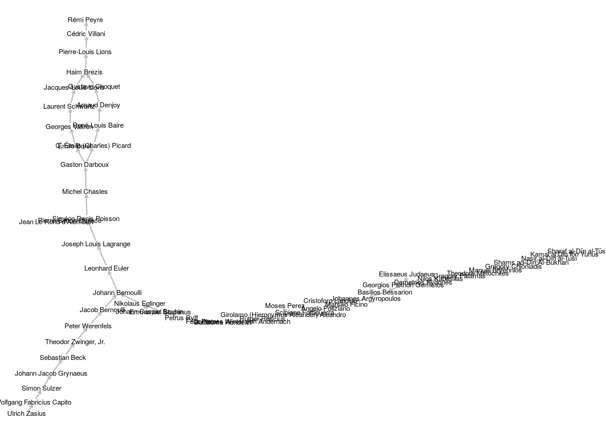

library(tidyverse)
library(rvest)
library(glue)
library(tidygraph)
library(ggraph)remi_peyre <- "https://www.genealogy.math.ndsu.nodak.edu/id.php?id=150077"
remi_peyre %>%
read_html() %>%
html_node(xpath = '//*[@id="paddingWrapper"]/p[2]/a')## {xml_node}
## <a href="id.php?id=56307">remi_peyre_adv <-
remi_peyre %>%
read_html() %>%
html_node(xpath = '//*[@id="paddingWrapper"]/p[2]/a') %>%
html_text()
remi_peyre_adv## [1] "Cédric Villani"remi_peyre_adv_id <-
remi_peyre %>%
read_html() %>%
html_node(xpath = '//*[@id="paddingWrapper"]/p[2]/a') %>%
html_attr("href") %>%
str_extract("[0-9]+")
remi_peyre_adv_id## [1] "56307"remi_peyre %>%
html_session() %>%
follow_link(remi_peyre_adv) %>%
session_history()## Navigating to id.php?id=56307## https://www.genealogy.math.ndsu.nodak.edu/id.php?id=150077
## - https://www.genealogy.math.ndsu.nodak.edu/id.php?id=56307haim_brezis <- "https://www.genealogy.math.ndsu.nodak.edu/id.php?id=39923"
# //*[@id="paddingWrapper"]/p[2]/a[1]
# //*[@id="paddingWrapper"]/p[2]/a[2]
haim_brezis_adv <-
haim_brezis %>%
read_html() %>%
html_nodes(xpath = '//*[@id="paddingWrapper"]/p[2]/a[.]') %>%
html_text()
haim_brezis_adv## [1] "Gustave Choquet" "Jacques-Louis Lions"haim_brezis_adv_id <-
haim_brezis %>%
read_html() %>%
html_nodes(xpath = '//*[@id="paddingWrapper"]/p[2]/a[.]') %>%
html_attr("href") %>%
str_extract("[0-9]+")
haim_brezis_adv_id## [1] "15600" "36703"ulrich_zasius <- "https://www.genealogy.math.ndsu.nodak.edu/id.php?id=126659"
ulrich_zasius_adv <-
ulrich_zasius %>%
read_html() %>%
html_nodes(xpath = '//*[@id="paddingWrapper"]/p[2]/a[.]') %>%
html_text()
ulrich_zasius_adv## character(0)ulrich_zasius_adv_id <-
ulrich_zasius %>%
read_html() %>%
html_nodes(xpath = '//*[@id="paddingWrapper"]/p[2]/a[.]') %>%
html_attr("href") %>%
str_extract("[0-9]+")
ulrich_zasius_adv_id## character(0)generate_page <- function(id){
glue("https://www.genealogy.math.ndsu.nodak.edu/id.php?id={id}")
}
get_adv_id <- function(page){
page %>%
read_html() %>%
html_nodes(xpath = '//*[@id="paddingWrapper"]/p[2]/a[.]') %>%
html_attr("href") %>%
str_extract("[0-9]+")
} create_edgelist <- function(id){
advisors_id <- get_adv_id(generate_page(id))
L <- length(advisors_id)
if(L == 0){
return(matrix(ncol = 2, nrow = 0))
}
if(L == 1){
return(rbind(matrix(c(rep(id, L), advisors_id[1]), ncol = 2),
create_edgelist(advisors_id[1])))
}
if(L == 2){
return(rbind(matrix(c(rep(id, L), advisors_id), ncol = 2),
create_edgelist(advisors_id[1]),
create_edgelist(advisors_id[2])))
}
}id_peyre <- 150077
df_edgelist <-
id_peyre %>%
create_edgelist() %>%
as_tibble()nrow(df_edgelist)## [1] 151df_edgelist <- unique(df_edgelist)
print(df_edgelist, n = Inf)## # A tibble: 57 x 2
## V1 V2
## <chr> <chr>
## 1 150077 56307
## 2 56307 13140
## 3 13140 39923
## 4 39923 15600
## 5 39923 36703
## 6 15600 24548
## 7 24548 105158
## 8 105158 34266
## 9 34266 34254
## 10 34254 26995
## 11 26995 17865
## 12 17865 17864
## 13 17865 108295
## 14 17864 38586
## 15 38586 53410
## 16 53410 54440
## 17 53410 129628
## 18 54440 143084
## 19 143084 143083
## 20 143083 143082
## 21 143082 143045
## 22 143045 182092
## 23 182092 131399
## 24 131399 126659
## 25 129628 125125
## 26 129628 129708
## 27 125125 130248
## 28 130248 182090
## 29 182090 158329
## 30 158329 119159
## 31 119159 126571
## 32 126571 127181
## 33 127181 131446
## 34 127181 131447
## 35 131447 131535
## 36 131535 131539
## 37 131535 131540
## 38 131539 131444
## 39 131444 131561
## 40 131561 131575
## 41 131575 134780
## 42 131575 134781
## 43 134780 146365
## 44 146365 176844
## 45 176844 184631
## 46 184631 184632
## 47 184632 201288
## 48 201288 204293
## 49 204293 217509
## 50 217509 223724
## 51 223724 230926
## 52 129708 125125
## 53 108295 108266
## 54 36703 34233
## 55 34233 73816
## 56 73816 39071
## 57 39071 34254get_name <- function(xml_page){
xml_page %>%
html_node(xpath = '//*[@id="paddingWrapper"]/h2') %>%
html_text() %>%
str_remove_all("\n") %>%
str_replace_all(" ", " ")
}
get_infos <- function(page){
xml_page <- read_html(page)
tibble(label = get_name(xml_page))
}df_nodes <-
df_edgelist %>%
gather() %>%
pull(value) %>%
unique() %>%
tibble(id = .) %>%
mutate(page = map_chr(id, generate_page),
infos = map(page, get_infos)) %>%
unnest(infos) %>%
select(-page)df_nodes## # A tibble: 56 x 2
## id label
## <chr> <chr>
## 1 150077 "Rémi Peyre "
## 2 56307 "Cédric Villani "
## 3 13140 "Pierre-Louis Lions "
## 4 39923 "Haim Brezis "
## 5 15600 "Gustave Choquet "
## 6 24548 "Arnaud Denjoy "
## 7 105158 "René-Louis Baire "
## 8 34266 "C. Émile (Charles) Picard "
## 9 34254 "Gaston Darboux "
## 10 26995 "Michel Chasles "
## # ... with 46 more rowsG <-
df_edgelist %>%
select(V2, V1) %>%
as_tbl_graph()
G## # A tbl_graph: 56 nodes and 57 edges
## #
## # A directed acyclic simple graph with 1 component
## #
## # Node Data: 56 x 1 (active)
## name
## <chr>
## 1 56307
## 2 13140
## 3 39923
## 4 15600
## 5 36703
## 6 24548
## # ... with 50 more rows
## #
## # Edge Data: 57 x 2
## from to
## <int> <int>
## 1 1 56
## 2 2 1
## 3 3 2
## # ... with 54 more rowsG <- left_join(G, df_nodes, c("name" = "id"))
G## # A tbl_graph: 56 nodes and 57 edges
## #
## # A directed acyclic simple graph with 1 component
## #
## # Node Data: 56 x 2 (active)
## name label
## <chr> <chr>
## 1 56307 "Cédric Villani "
## 2 13140 "Pierre-Louis Lions "
## 3 39923 "Haim Brezis "
## 4 15600 "Gustave Choquet "
## 5 36703 "Jacques-Louis Lions "
## 6 24548 "Arnaud Denjoy "
## # ... with 50 more rows
## #
## # Edge Data: 57 x 2
## from to
## <int> <int>
## 1 1 56
## 2 2 1
## 3 3 2
## # ... with 54 more rowsggraph(G, layout = "fr") +
geom_edge_link(colour = "grey",
arrow = arrow(length = unit(1, 'mm')),
start_cap = circle(1, 'mm'),
end_cap = circle(1, 'mm')) +
geom_node_text(aes(label = label), size = 2) +
theme_void()